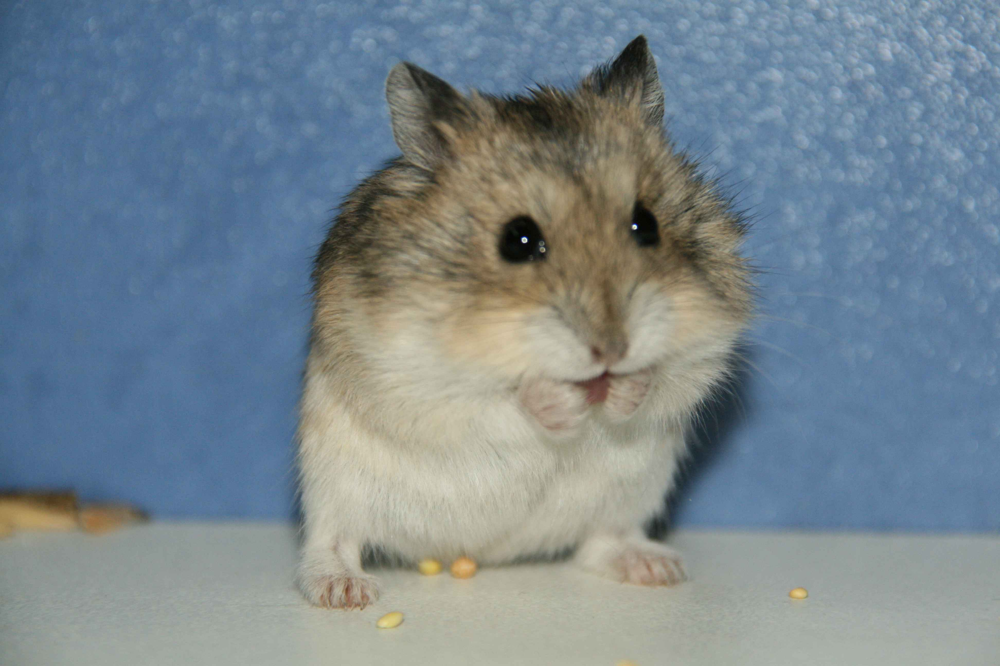

Джунгарский хомяк описание:
Джунгарский хомяк один из самых маленьких представителей домашних грызунов, в природе он обитает в полупустынях и сухих степях Восточного Казахстана, Хакасии и Западной Сибири. Джунгарского хомяка часто путают с хомяком Кэмпбпелла, и часто случаются спаривания между этими видами, с получением потомства гибридов, что является не желательным, т.к. в дальнейшем у гибридов появляются проблемы со здоровьем и размножением. Так что хорошенько изучите отличительные признаки этих хомяков, и определите, какой именно вид достался вам, благо в интернете это подробно расписано.
